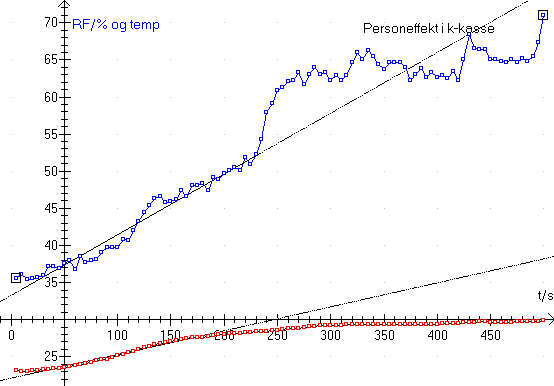

Formålet med øvelsen er at bestemme en persons hvileeffekt.
Til forsøgene benyttes en person, en kasse og en CBL 2 tilsluttet termosonde
og Relativ fugtighedssonde og programmet Datalyse.
Man indbygger en u-kasse i et skab i laboratoriet. Desuden monteres tætningslister på skabets forside, således at en stor flamingoplade vil lukke tæt, når denne anbringes foran skabet.
Personen bør være let påklædt (badetøj, shorts eller lignende) under opholdet i kassen. Noter personens køn, alder og vægt og opmål kassens volumen.
Først indstiller man CBL’en fra pc’en: mål hvert 10’ende sekund i 500 sekunder, dvs. 50 målinger. Vælg manual trigning. CBL’ens gule diode skal lyse.
Forsøgspersonen anbringes siddende med ryggen mod kammerets ene endevæg. CBL’en med sonder anbringes overfor, fx mellem personens fødder, men fri af disse. Målingerne startes ved at trykke på trigger-tasten på CBL’en samtidigt med, at der lukkes for personen. Forsøgspersonen bør holde øje med om CBL’en måler. Den grønne diode skal blinke, hvert 10 sekund.
Når målingerne er færdige, beeper CBL’en, og personen kan komme ud. CBL’en tilsluttes pc’en og målingerne overføres til Datalyse.
Man kan indledningsvis anbringer en 75 W pære i kassen og måle temperaturen hvert 5. sekund som funktion af tiden i 10 minutter med programmet Datalyse. Der opnås ikke temperaturligevægt i kassen, men det er heller ikke meningen. I starten af forsøget går varmen fra pæren til opvarmning af luften i kassen. Indtegn en tangent til tiden 0 på grafen. Benyt tangenthældningen til at beregne atmosfærisk lufts varmefylde.
En person afgiver både varme og fugt til luften i kassen. Benyt fx en CBL til at måle temperaturen og den relative fugtighed hvert 5. sekund. 100 målinger vil være passende. CBL’en kan logge uden at være tilsluttet en pc.
Når de målte data er overført til pc’en, laves lineær regression på første del af graferne. Ved hjælp af de lineære regressioner bestemmes temperatur og relativ fugtighed til tiden 0 s og tiden 200 s.
Vha. en databog beregnes luftens indhold af vanddamp til de to tider, og herefter kan effekten til fordampning beregnes.
Dernæst beregnes kassens rumfang og vha. tilstandsligningen beregnes stofmængden i kassen til tiden 0 s. Benyt varmefylden for tør atmosfærisk luft, som er 29 J/(mol K) til beregne effekten til opvarmning af luften.
Forsøget er ufarligt, da eleverne kun opholder sig i kassen i kort tid.
Dette forsøg har flere fordele:
Forsøget var kun 10 minutter, så flere personer kan blive målt.
Metoden er lærerig
Forsøget kan udbygges med måling af CO2.
Forsøget har også nogle begrænsninger:
Personen skal være i badetøj – ellers går der varme til tøjet og fugtighed sætter sig i tøjet.
Der måles ikke kropstemperatur.
Professionelle målinger foretages ved konstant temperatur og fugtighed. Målenøjagtigheden er mindre, når temperatur og fugtighed ændres.
